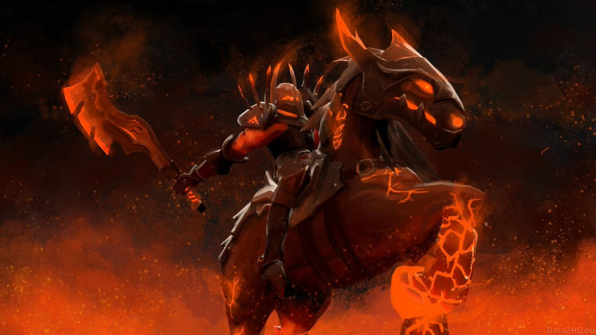
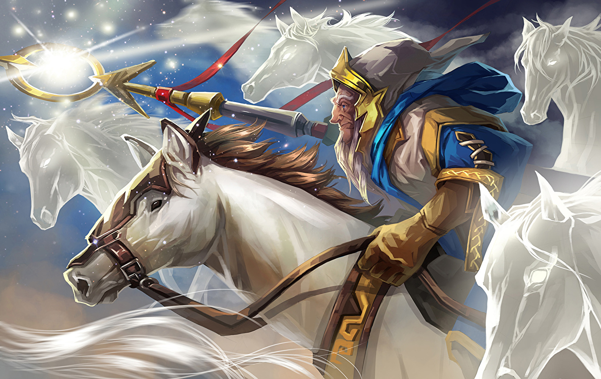
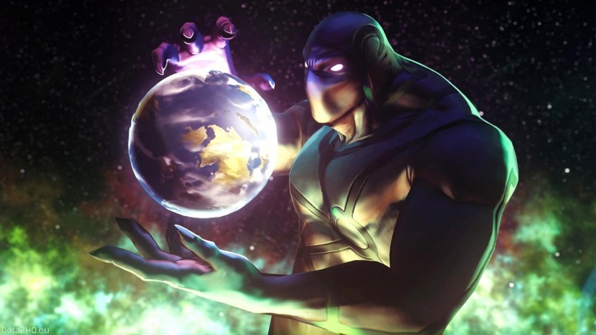
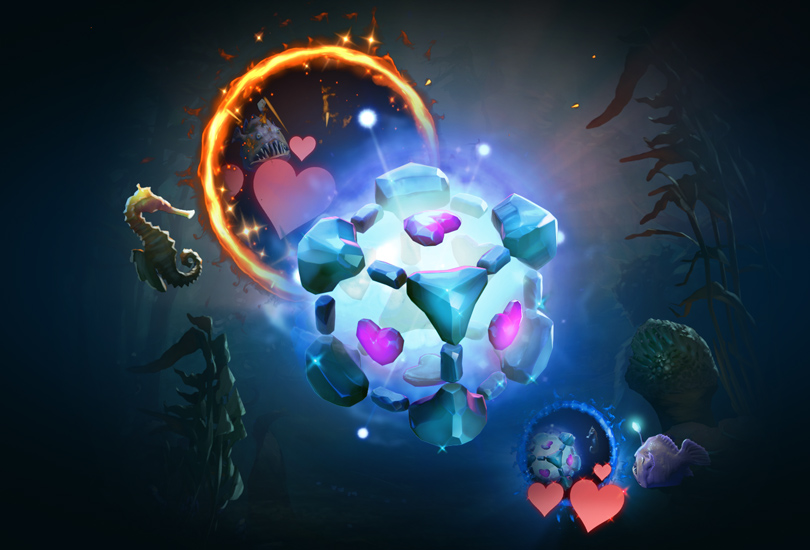
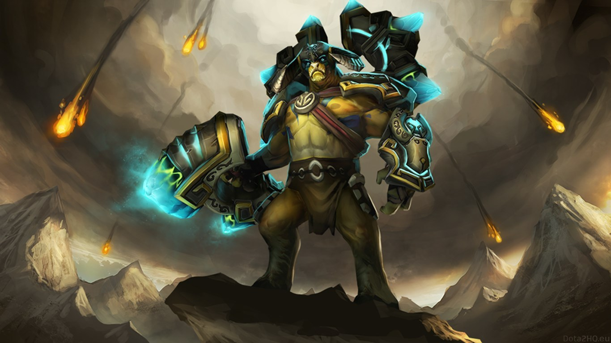

В этот статье вы узнаете, наверное, самое главное: почему и зачем сражаются герои Доты 2. Согласитесь, вопрос довольно любопытный, но как часто вы его себе задавали? Наверняка большинство даже на задумывались об этом, да и зачем?
Но на деле же, Дота - это не просто игра с набором внутренних условностей и правил, лишающих её вселенную хоть какого-то смысла. Нет, у вселенной второй Доты есть своя история,
которая поможет узнать причину этой бесконечной войны между героями. Об этой истоии мы сегодня и поговорим.
Итак, начать хотелось бы с самых корней: фундаменталов. Согласно преданиям фундаменталы не подвласны времени и появились ещё до создания 7 проекций: измерений в котором
существует вселенная Доты.
Первый - Chaos Knight

- фундаментал Хаоса, символизирующий сильное ядерное взаимодействие. Он охотится
за вторым фундаменталом, с которым они некогда были нераздельно связаны - Keeper of the Light

-
фундаментал Света. Он отвечает за слабое ядерное взаимодействие - силу, регулирующую протекание радиоактивного распада субатомных частиц. Этих двух фундаменталов
прозвали также великими близнецами-всадниками. Enigma

- это третий фундаментал, материализующий силу Гравитации.
Даже его имя кроет в себе тайну. Информация о трёх этих фундаменталах написана в биографии последнего - Io.

Представляет
собой самую чистую силу из всех существующий. Персонаж воплощает Электромагнитное Взаимодействие, удерживающее сущее вместе. То есть по итогу всё на чём держится
вся наша реальная вселенная в Доте просто присудили неким существам, и сделали их воплощением этих космических сил: гравитация, элетромагнетизм, сильное и слабое ядерное
взаимодействие.
Помимо нерушимых единых фундаменталов существовали также и Титаны - прародители этого и многих других миров, которые если и не созерцали создание
сущего, то с рождения помнят его эхо. Одним из них был Elder Titan.

Они взяли на себя задачу перекроить мир,
переделать реальность, но тот из них о котором идёт речь, случайно поколебал то, что уже нельзя было восстановить - единство. Действия Elder Titanа повлекли за собой
событие, названное расколом, расколом чётырёх фундаменталов. Это событие очень тесно перекликается с реальной теорией возникновения нашей вселенной, теорией Большого
взрыва и его этапами. Спустя некотое время, когда планета, которую гараздо позже заселит огромное множество разных существ, ещё остывала, на её орбите появился спутник,
излучающий яркое свечение. Спустя тысячелетия, когда на этом планете уже во всю кипела жизнь и возникло большое множество различный империй, альянсов и племён, среди
котором уже жили знакомые нам герои Доты этот спутник был прозван Безумной Луной. Как выяснилось в нём были заточены сущности двух древних, которые вели бесконечную войну
ещё задолго до Большого взрыва. Это были сущности Света и Тьмы, их полная непримеримость приводила к ужастным разрушениям и катаклизмам, и поэтому некоторые Предтечи,
создатели всего сущего, решили избавиться от них и заточили их в эту самую сферу - тюрьму для двух врагов, которая миллионы лет дрейфовала в космосе. Всё это время сущности не
прекращали борьбу и пытались выбраться из заточения и когда Безумная Луна стала спутником планеты, на которой жили наши герои, им это всё-таки удалось. Сфера
разрушилась, и её осколки вместе с двумя сущностями упали на Землю. Древние дали насевляшим планету созданиям могущественные силы: ману и даже сбособность воскрешаться
после смерти. Вокруг двух самых крупных осколков были выстроены некие святилища. Один представлял Сущность Света, а другой Сущность Тьмы.
Вскоре древние развязали войну друг с другом, но уже посредством своих марионеток: крипов и героев. Это
событие и даёт нам толчок в геймпленую составляющую игры. Герои доты сражаются не потому что они злые или добрые, у них нет определённой страны, они сражаются,
преследуя свои личные цели - чтобы кому-то отомстить или просто испытать свои силы. В этом им и помогаю Сущности Света или же Тьмы. Они наделяют их мощными
способностями и даруют безсмертие, благодаря которому герои не теряют равным счётом ничего. О целях кажого персонажа написано в его биографии, которую вы можете найти
тут.